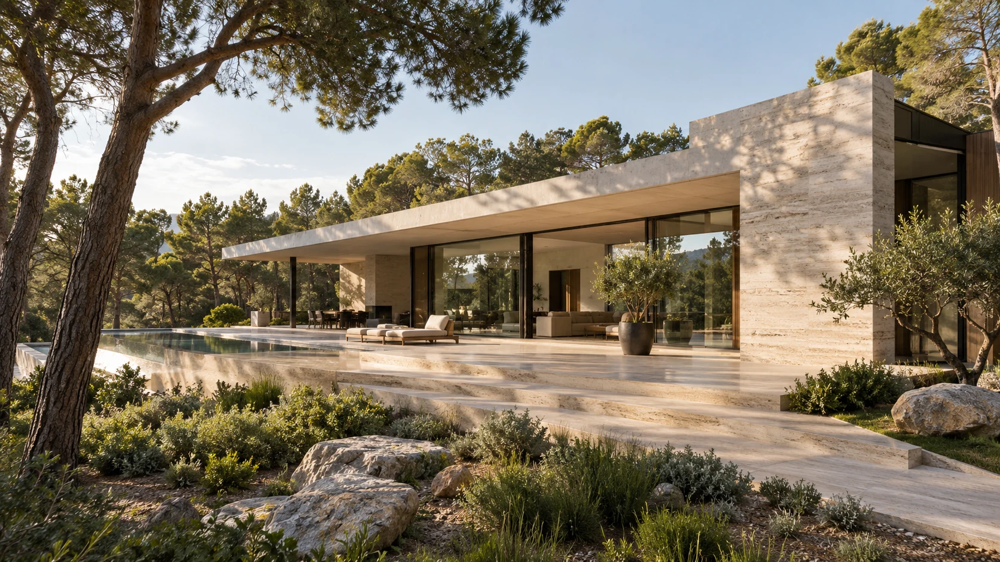
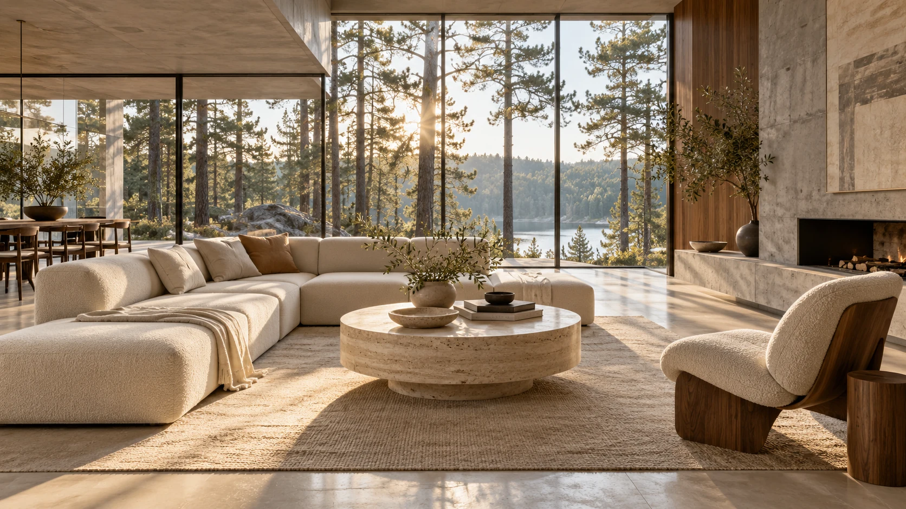

Частные дома / Интерьеры
Дом начинается
с вашей жизни.
Как вы проводите утро.
Где собираетесь всей семьёй.
Когда хочется побыть одному.
С этих вещей начинается проект.


Исследование 01
Открыто природе.
Продумано для жизни.
Одноэтажный дом с общей зоной, которая выходит на террасу. Большие окна впускают дневной свет, а отдельная приватная часть сохраняет тишину.
- Площадь концепта
- 240 м²
- Организация
- 1 этаж
- Материалы
- Камень
Дерево
Стекло
Вымышленный объект. Изображения и параметры подготовлены для концепта сайта.
Что делает дом своим
Удобно жить.
Приятно возвращаться.
Планировка под привычки
Общая кухня-гостиная, тихий кабинет или место для большой семьи. Сначала определяем сценарии, затем распределяем пространство.
Свет в нужном месте
Ориентация окон и глубина комнат влияют на весь день в доме. Учитываем их вместе с планировкой.
Материалы, которые сочетаются
Камень, дерево и стекло поддерживают общую идею. Подбираем фактуры без случайных деталей.
Как рождается проект
От разговора
к пространству.
Понятная последовательность помогает принимать решения вовремя — и видеть, как идея становится проектом.
01Знакомимся с задачей
Обсуждаем участок, состав семьи и образ жизни. Собираем пожелания, ограничения и приоритеты в одном брифе.
02Собираем концепцию
Сравниваем планировки и объёмы, ищем положение дома на участке. Уточняем решения вместе с владельцами.
03Продумываем детали
Согласуем материалы, освещение и взаимосвязь помещений. Детали продолжают идею, заложенную в концепции.
Начнём с вашего замысла
Есть участок.
Есть идея.
Опишите место и то, каким вы видите будущий дом. Бриф поможет собрать первые вводные.
Демонстрационная форма. Данные остаются у вас.